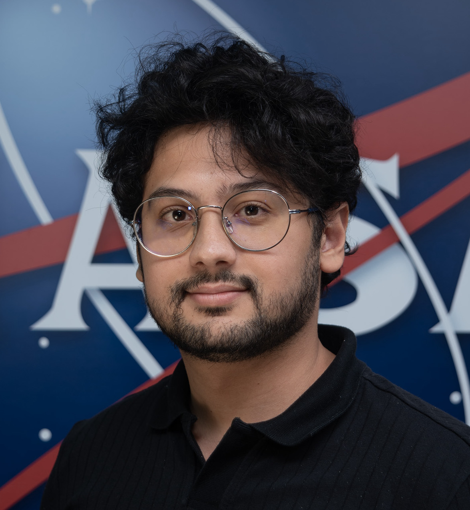

TUNSA Astronomy & Astrophysics
TUNSA Astronomy & Astrophysics

Ashraf Dhahbi
Hey! I'm the TUNSA A&A team lead, and a SURA post-bac @ NASA GSFC working on the Exoplanet Modeling and Analysis Center (EMAC) and Exoplanet Spectroscopy. My main research interests revolve around planetary formation, evolution and habitability to answer the question: "How likely are we?"